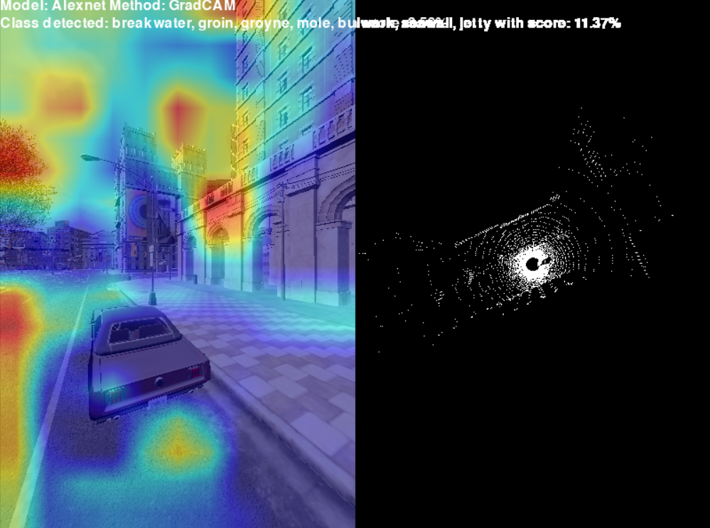
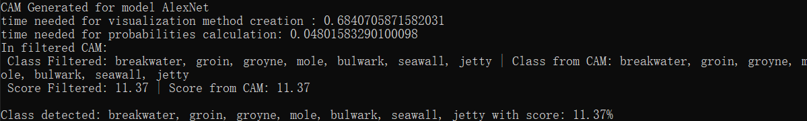
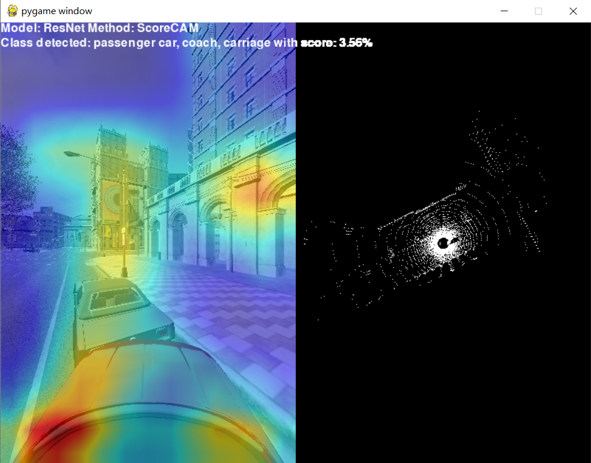
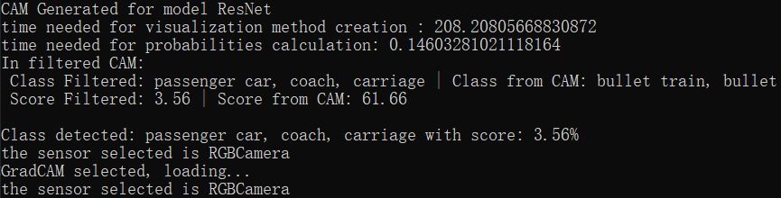

carla_CAM
用于在 Carla 模拟器中使用类激活映射（Class Activation Mapping, CAM）技术测试卷积神经网络（CNN）的应用。 该项目旨在提高自动驾驶背景下深度学习模型的透明度。
1. CAM可视化核心原理与数学表达
在我们的项目中可以选择多种CAM算法，比如Grad CAM、Score CAM、Ablation CAM等。为了理解模型是如何产生热力图的，我们以最经典的Grad-CAM为例做解释：
1.1 核心数学公式
Grad-CAM 的目的是计算出图像中哪些区域对网络预测某个特定类别 $c$（例如“汽车”或“高铁”）的贡献最大。
步骤1：计算特征图权重
假设网络最后一个卷积层输出的特征图为 $A$，其中第 $k$ 个通道的特征图记为 $A^k$。我们首先求目标类别分数 $y^c$（Softmax 激活前的值）对特征图 $A^k$ 中每个像素点 $(i, j)$ 的梯度，并进行全局平均池化（Global Average Pooling），得到神经元权重 $\alpha_k^c$：
步骤2：生成类激活热力图
将求得的权重 $\alpha_k^c$ 与对应的特征图 $A^k$ 进行线性加权求和，并通过 ReLU 激活函数过滤掉负向影响（我们只关心哪些特征正向促进了该类别的识别）：
这一步你就可以看到生成的冷暖色调热力图。
2. CAM 可视化方法对比
这里我们用两个截然不同的流派来做对比：Grad-CAM vs. Score-CAM
这两种方法代表了 CAM 技术演进中的两个截然不同的流派：基于梯度（Gradient-based）与无梯度（Gradient-free/Perturbation-based）。
| 对比维度 | Grad-CAM (基于梯度) | Score-CAM (无梯度) |
|---|---|---|
| 核心机制 | 计算目标类别得分对特征图像素的偏导数，进行全局平均池化（GAP）作为通道权重。 | 将特征图通道作为掩码（Mask）叠加到原图上，进行多次前向传播，以目标类别的置信度增量作为通道权重。 |
| 对梯度的依赖 | 完全依赖。 需要反向传播计算梯度。 | 零依赖。 仅通过前向推理评估特征的重要性。 |
| 计算开销 | 极小。 仅需一次前向传播和一次反向传播，速度极快（毫秒级）。 | 极大。 每个特征通道都需要进行一次独立的前向传播计算（在深层网络中可能耗时数秒至数分钟）。 |
| 特征映射质量 | 容易受到“梯度饱和（Gradient Saturation）”和深层网络“梯度破碎（Shattered Gradients）”噪声的影响，热力图可能呈现碎片化。 | 彻底规避了梯度噪声，生成的激活图通常更加平滑、聚焦且具有更好的视觉连贯性。 |
| 模型兼容性 | 要求模型及其目标层必须是可微的（Differentiable），对某些特殊架构（如缺乏梯度的自定义算子）不兼容。 | 模型不可知（Model Agnostic）。 只要模型能输出分类分数即可，兼容性极高。 |
| 适用场景偏好 | 实时分析、大规模数据集的快速批量验证。 | 追求极高解释精度的单一样本深度分析，或用于存在不可微操作的复杂网络。 |
3. 神经网络架构对比
从特征提取的几何约束和拓扑偏置来看，这两种网络代表了深度学习早期“粗放式空间缩减”与现代“深度迭代细化”的根本差异。
| 对比维度 | AlexNet | ResNet |
|---|---|---|
| 网络深度 | 浅层 (Shallow)： 典型的 8 层结构（5个卷积层 + 3个全连接层）。 | 超深层 (Deep)： 18 到 152 层甚至更深。 |
| 核心拓扑基元 | 线性堆叠 (Linear Stacking)： 标准的前馈逐层传递，无跨层信息交互。 | 残差连接 (Skip Connections / Shortcut)： 引入跨层恒等映射，解决深度剧增带来的梯度消失问题。 |
| 初始感受野设计 | 极端的空间缩减： 首层采用巨大的 $11 \times 11$ 卷积核和步长 4，导致极其强烈的局部几何结构提取偏置（对宏观边缘、纹理极敏感）。 | 温和的特征抽象： 首层通常采用 $7 \times 7$ 卷积，随后大量依赖 $3 \times 3$ 微小卷积核的堆叠来逐步扩大感受野。 |
| 特征表征特征 | 低级视觉强绑定： 由于层数少且缺乏跨层融合，其高层神经元仍保留大量对特定物理形状（如直线、简单几何体）的直接响应。 | 高度语义化/各向异性： 通过深层残差聚合，浅层的几何基元被高度解构，网络更倾向于表征抽象的拓扑组合和复杂语义。 |
| 分类器的结构 | 尾部使用极其臃肿的（多达 4096 维）的多个全连接层（FC），占据了网络绝大部分参数。 | 摒弃了大型全连接层，采用全局平均池化（GAP）直接映射到类别输出，参数分布更侧重于卷积层本身。 |
| 结构性偏置的影响 | 在未经训练（Untrained）或面对领域外（OOD）数据时，极易被画面中强烈的宏观线条或边缘“锚定”而产生误判。 | 具有更强的平移不变性和复杂特征容错率，但也更容易发生过度依赖背景纹理而非目标主体形状的偏置（Texture Bias）。 |
## 4. 不同解释性方法以及网络结构在场景中的对比
这里我们使用方案一：AlexNet + Grad-CAM 以及 方案二：ResNet + Score-CAM 来进行对比
1. 计算性能与显存开销 (Computational Overhead)
| 模型架构 | CAM 生成耗时 | 概率计算耗时 | 性能诊断分析 |
|---|---|---|---|
| AlexNet | 0.684 秒 | 0.048 秒 | 正常流畅。参数量较小，梯度回传顺畅，显存占用低。 |
| ResNet | 208.208 秒 | 0.146 秒 | 严重异常。生成时间高达 200 秒以上，表明在构建深层计算图并回传梯度时，系统极有可能遭遇了显存溢出（OOM），导致 PyTorch 强行回退到 CPU 进行内存交换运算。 |
| --- | |||
| 结论：基于梯度的 CAM 方法（如 Grad-CAM）对网络深度高度敏感。在 CARLA 这种本身就极耗显存的 3D 渲染环境中，对深层残差网络（ResNet）进行梯度回传容易引发系统级瓶颈。 |
2. 预测一致性与特征置信度分布
- AlexNet（高度发散与弱置信）： * 模型的 Top-1 预测与强制过滤目标（Filtered）一致，均为
breakwater... (防波堤/海堤)，但置信度仅为 11.37%。 - 这表明面对 OOD (Out-of-Distribution) 的虚拟场景，AlexNet 的 Softmax 输出极其平缓，网络在多个类别间犹豫不决，“防波堤”仅仅是微弱胜出。


- ResNet（高度确信的语义误判）：
- 模型以 61.66% 的高置信度认为画面是一列
bullet train (高铁)，完全偏离了我们关注的passenger car（仅剩 3.56% 概率）。 - 深层网络强制对画面中的局部特征进行了高层次的语义拟合，展现出了极强的“过度自信”。


3. 从“结构性偏置”视角的深度解释
这两个方案直观地展示了不同网络架构在面对虚拟渲染图像时，其归纳偏置（Inductive Bias）的失效方式。
- AlexNet 的宏观几何偏置： AlexNet 的浅层特征图通过大尺寸卷积核进行极端的空间缩减，这使得它对强烈的、高对比度的直线边缘极为敏感（类似于灵长类视觉系统早期腹侧通路的 Gabor 边缘响应）。在 CARLA 画面中，笔直的混凝土护栏、马路边缘等几何形态，刚好触发了网络预训练中对“海堤/防波堤”这类长条状宏观拓扑基元的强烈激活。它并未理解“这是一条路”，而是被局部的几何形状约束了。
- ResNet 的深度语义与各向异性偏置： 相反，ResNet 通过深层残差连接，特征具有更强的各向异性和高度语义化。它之所以将画面高置信度地判为“高铁”，很可能是因为 CARLA 渲染的连续道路标线、光滑的车身边缘以及特定的透视角度，在深层特征空间中与训练集里“高铁车身+铁轨”的复杂特征组合产生了共振。这也侧面说明，在虚拟数据流中，深层网络更容易被具有强烈结构性的背景纹理（Texture Bias）所欺骗，从而彻底掩盖了真实的目标特征。